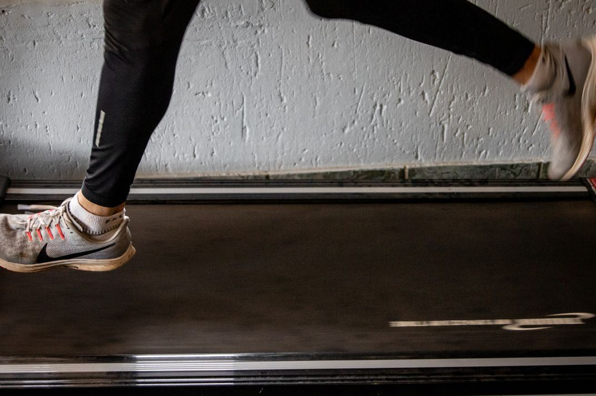

Best Under-Desk Treadmills & Walking Pads (2026): Size, Speed & Desk Height
A walking pad turns standing-desk time into gentle movement. For desk use, what matters is a speed range suited to walking while typing, a weight rating with some headroom, a footprint you can store, and one thing most listings skip: the deck adds 4–5 in to your height, so your standing desk has to go that much higher. We compared three popular pads on those numbers and worked out the desk height you'll need.
Quick picks
| Product | Best for | Amazon |
|---|---|---|
| WalkingPad C2 | Smallest storage | Check price |
| WalkingPad Z1 | Lighter, slimmer fold-in-half pad | Check price |
| DeerRun Walking Pad with 6% Incline | Budget, higher weight limit | Check price |
How to choose
1. Check your desk can go high enough
Standing on a pad raises you by its deck height, about 4–5 in on popular models. Your standing desk has to reach your standing elbow height plus that deck. The table below shows the height you'll need; our calculator has a walking-pad option.
2. Walking speed is slow
Most people type comfortably at about 1–2 mph. You don't need running speeds for desk use; a top speed around 3.7–4 mph is plenty.
3. Weight rating and belt size
Leave headroom below the user weight limit, and check that the belt is long and wide enough for your stride (most desk pads are about 16 in wide).
4. Noise and floors
Claimed noise figures are often optimistic: one reviewer measured a pad rated under 45 dB at about 57 dB. Put a mat underneath to cut vibration, especially in apartments or on calls.
5. Storage
Fold-in-half pads like WalkingPad's slide under a sofa or bed; flat pads need a wall or closet to lean against.
Specs side by side
| Product | Speed | Max user weight | Folded / size | Deck height | Price tier |
|---|---|---|---|---|---|
| WalkingPad C2 | 0.5–3.7 mph | 220 lb | Folds to about 32 × 20 × 5.4 in | About 4.9 in | Premium |
| WalkingPad Z1 | Up to about 3.7–4 mph (listings vary) | 242 lb | Folds to about 32 × 22 × 5.4 in | About 4.1 in | Mid-range |
| DeerRun Walking Pad with 6% Incline | 0.6–3.8 mph | 300 lb (per listing) | Flat, doesn't fold | Not listed | Budget |
From manufacturer pages, listings and reviews; see the sources under each pad. Speed and noise figures vary between listings, so confirm on the one you buy.
How high your desk needs to go
Standing on a walking pad raises you by the height of its deck, about 4–5 in on popular models, so your standing desk has to go that much higher too. Here's the desk height you'll need (regular shoes, about 4.5 in of deck) and which desks from our standing desk guide reach it.
| Your height | Desk height on a walking pad | Desks that reach it |
|---|---|---|
| 5'0" | 43.3″ | FlexiSpot E6 Bamboo, Vari Classic Electric Standing Desk 60x30, FlexiSpot EN1 One-Piece |
| 5'2" | 44.5″ | FlexiSpot E6 Bamboo, Vari Classic Electric Standing Desk 60x30, FlexiSpot EN1 One-Piece |
| 5'4" | 45.8″ | FlexiSpot E6 Bamboo, Vari Classic Electric Standing Desk 60x30, FlexiSpot EN1 One-Piece |
| 5'6" | 47.1″ | FlexiSpot E6 Bamboo, Vari Classic Electric Standing Desk 60x30 |
| 5'8" | 48.3″ | FlexiSpot E6 Bamboo, Vari Classic Electric Standing Desk 60x30 |
| 5'10" | 49.6″ | FlexiSpot E6 Bamboo, Vari Classic Electric Standing Desk 60x30 |
| 6'0" | 50.8″ | None in our desk guide; look for a desk that reaches at least this height |
| 6'2" | 52.1″ | None in our desk guide; look for a desk that reaches at least this height |
| 6'4" | 53.4″ | None in our desk guide; look for a desk that reaches at least this height |
| 6'6" | 54.6″ | None in our desk guide; look for a desk that reaches at least this height |
Desk heights include a 1 in desktop for FlexiSpot frames. Your exact deck height depends on the pad; check its listing.
The shortlist
Smallest storage
1. WalkingPad C2
The C2 folds in half to slide under a sofa or bed, which makes it the most apartment-friendly pad here. It's a walking-only machine (up to about 3.7 mph) with a 220 lb user limit, and reviewers praise how easily it stores. It's also the priciest of the three.
What we like
- Folds in half for storage
- Compact footprint
- Remote and app control
Trade-offs
- Walking speeds only
- Lower weight limit than some rivals
What other reviewers found
- Tom's Guide: reviewed it as a compact, foldable walking pad for desk use.
- Garage Gym Reviews: flagged its user weight capacity as below the industry standard.
Skip it if: You weigh over about 200 lb or want to jog.
Check WalkingPad C2 on Amazon →Spec sources (checked Nov 2, 2026): JB Hi-Fi listing
Lighter, slimmer fold-in-half pad
2. WalkingPad Z1
The Z1 is WalkingPad's newer, cheaper fold-in-half pad: about 51 lb, a 4.1 in slim deck and a 242 lb user limit. Tom's Guide recommends it for adding daily steps, but its measured noise (about 57 dB) was well above the under-45 dB claim, so it's worth a mat on hard floors.
What we like
- Folds in half
- Higher weight limit than the C2
- Slim 4.1 in deck
Trade-offs
- Louder than claimed in testing
- Walking speeds only
What other reviewers found
- Tom's Guide: recommends it for hitting daily step goals, but measured about 57 dB against a claimed under 45 dB.
Skip it if: You take calls while walking and need it quiet, or you want to jog.
Check WalkingPad Z1 on Amazon →Spec sources (checked Nov 2, 2026): ocdevel Z1 notes
Budget, higher weight limit
3. DeerRun Walking Pad with 6% Incline
DeerRun's incline pad costs a fraction of WalkingPad's, adds a manual 6% incline and lists a 300 lb user limit with a 0.6–3.8 mph range. It doesn't fold, so you'll need a wall or closet to store it. One teardown-focused reviewer reports specs that differ from the listing (a brushed rather than brushless motor, and 7% incline on the brand site), so treat budget-pad spec sheets with some caution.
What we like
- Low price
- Higher listed weight limit
- Manual incline option
Trade-offs
- Doesn't fold
- Listing specs disputed by one reviewer
What other reviewers found
- ocdevel: reports from a teardown that the motor is brushed rather than brushless as claimed, and that the incline differs between the Amazon listing and the brand site.
Skip it if: You need to fold it away, or you want verified specs.
Check DeerRun Walking Pad with 6% Incline on Amazon →Why some walking pads aren't here
Earlier versions of this guide included UREVO and Goyouth pads. Neither was showing among the top walking pads on Amazon US when we checked, so we replaced them with the WalkingPad Z1 and a DeerRun incline pad. Many cheap unbranded pads with big review counts were left out because we couldn't find a manufacturer spec page to check.
FAQ
How fast should I walk at a standing desk?
Most people can type and take calls comfortably around 1–2 mph. Start slow; you can speed up for reading or meetings.
Do I need a special standing desk for a walking pad?
You need one that goes high enough. A walking pad adds about 4–5 in to your height, so your desk must reach your standing elbow height plus the deck. See the table above.
Are walking pads loud?
Quieter than running treadmills, but often louder than advertised. A mat underneath helps with vibration, especially in apartments.